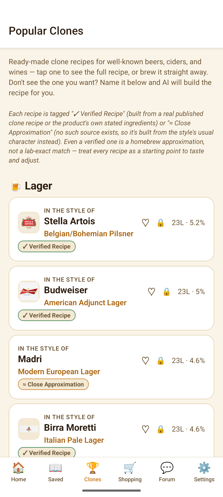

Scan a kit box and skip the typing. Get AI-tweaked recipes mid-ferment. Ask Hero when something looks wrong. Browse real recipes other brewers actually made. One app for beer, wine, and cider — from your first kit to your fiftieth batch.

Not a spreadsheet with extra steps — a real brewing assistant that knows what stage you're at.
Photograph a kit box or its instructions and Homebrew Hero reads the recipe and schedule straight off it — no manual data entry.
Want it stronger, drier, or a different style? Describe what you want changed and get a real, quantitatively-adjusted recipe back.
Ready-made clone recipes for well-known commercial beers, ciders, and wines — or name any brand and let AI build the clone for you.
Boil and mash timers with automatic alerts, plus day-before and overdue reminders so nothing gets left too long.
Add your real kit and equipment so AI only ever suggests methods you can actually run — no more "if you have a mash tun" guesswork.
Your pantry, tracked — deducted automatically as you brew, with retailer price search when it's time to restock.
Volume, ABV trends, and a full history of every batch you've ever brewed, in one place.
One app across every beverage type you brew at home — not a beer-only tool with wine bolted on as an afterthought.
Run as many vessels at once as your brew day actually needs — free is capped at one, every paid tier is unlimited.
Hero is the AI troubleshooter built into the app — describe what's going on, attach a photo, and get real, specific guidance instead of scrolling five forum threads hoping someone had your exact problem.
Bubbling stopped early? Weird smell? Not sure if that's mold or just yeast? Hero can look at your actual recipe and where you are in the schedule, not just guess in the dark.
Free to try once. Unlimited (within your plan) on every paid tier.
Finished a batch you're proud of? Add it to the Recipe Board as a structured recipe — not just a wall of text. Other brewers can browse it, save it, or load it straight into their own fermenter and start brewing it themselves.
Pick one of your own finished, packaged brews and post it as a real recipe — ingredients, quantities, and schedule intact.
Browse the board like a library — search by name, brewer, or style to find your next batch idea.
One tap loads someone else's recipe straight into a new brew on your own fermenter — or save it to try later.
Higher tiers don't lock extra features behind them — they just give you more brews and more AI allowance per month. Pick the one that matches how often you brew.
Prices shown in GBP; $ figures are approximate — the App Store and Google Play automatically localize pricing to your own currency and region at checkout, not a direct conversion of the GBP price. Usage levels (brews and AI allowances per tier) are subject to change after the current closed testing period. Every paid tier includes full AI recipe generation, AI tweaks, the full Popular Clones library, full Forum access, timers, equipment tracking, unlimited fermenters, retailer price search, priority support, ingredient inventory, and batch history analytics.